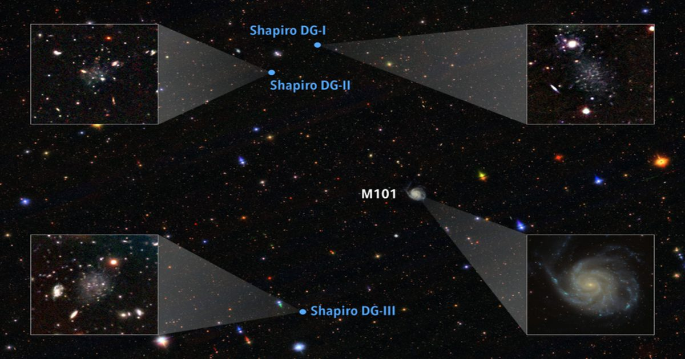

Студент находит три галактики и, возможно, разгадывает тайну
Не так часто студент средней школы, ставший бакалавром, получает три галактики, названные в его честь, особенно те, которые нарушают правила звездообразования.
Джулиан Шапиро, студент-астрофизик из Калифорнийского университета в Беркли, обнаружил странные карликовые галактики в окрестностях большой спирали M101, проводя исследования их скорости звездообразования в старшей школе.
Теперь они известны как Шапиро I, II и III.
В